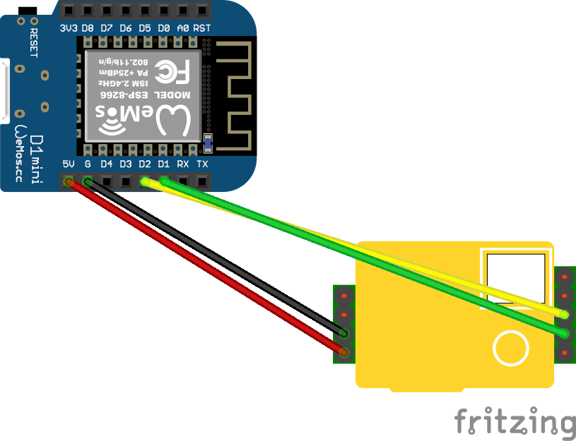
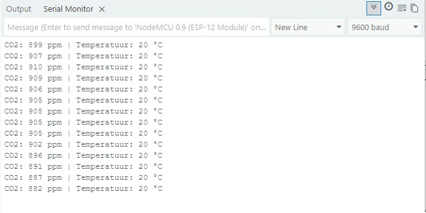
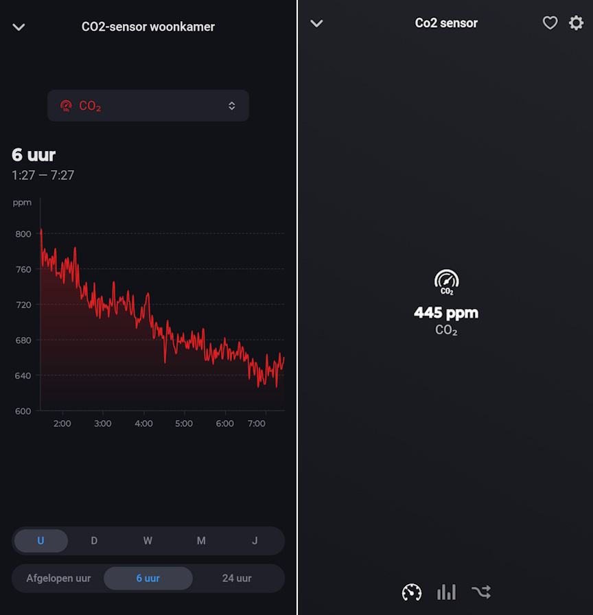

Een gezond binnenklimaat krijgt steeds meer aandacht, en dat is niet voor niets. Zeker in goed geïsoleerde woningen kan de CO₂-waarde binnenshuis ongemerkt oplopen. Juist daarom is het interessant om die concentratie niet af en toe, maar continu te meten en slim te koppelen aan je automatiseringen.
Met dit project bouw je zelf een compacte CO₂ sensor op basis van de MH-Z19B en een Wemos D1 Mini. De sensor leest iedere vijf seconden de actuele waarde uit, toont die via de seriële monitor en publiceert alleen naar Homey wanneer dat echt zinvol is. Dat houdt je flows netjes, beperkt onnodige updates en maakt deze versie van de sketch technisch een stuk slimmer dan een simpele “alles altijd versturen”-aanpak.
Wat ga je bouwen?
Je bouwt een slimme CO₂ sensor die via UART communiceert met de MH-Z19B en zijn metingen doorstuurt naar Homey met behulp van Homeyduino.
- CO₂ meten → De sensor leest de actuele CO₂-concentratie uit in ppm.
- Temperatuur uitlezen → Je leest ook de interne temperatuur van de MH-Z19 uit als extra diagnosewaarde.
- Gericht publiceren → De waarde wordt alleen naar Homey gestuurd bij de eerste geldige meting, bij een verschil van minimaal 30 ppm of na een heartbeat van 60 seconden.
- WiFi slim onderhouden → De sketch controleert de wifi periodiek en probeert de verbinding op de achtergrond te herstellen.
Het resultaat is een betaalbare sensor die niet alleen inzicht geeft in de luchtkwaliteit, maar ook direct bruikbaar is in Homey flows. Denk aan meldingen bij slechte luchtkwaliteit of het automatisch opschakelen van mechanische ventilatie.
Benodigdheden
- Wemos D1 Mini of vergelijkbare ESP8266-board
- MH-Z19B CO₂ sensor
- Jumper wires
- Micro-USB kabel
- Homey met de Homeyduino-app geïnstalleerd
- Arduino IDE op je computer
Handige links bij dit project
Dit zijn producten die aansluiten op de benodigdheden in dit artikel.
Stap-voor-stap uitleg
1. Installeer Arduino IDE en voeg ESP8266 board support toe
De Wemos D1 Mini is gebaseerd op de ESP8266. Dat betekent dat Arduino IDE eerst moet weten hoe het met dit board moet omgaan. Is dat nog niet goed ingesteld, dan loop je al snel tegen foutmeldingen aan zoals ESP8266WiFi.h: No such file or directory.
Voeg daarom eerst de juiste board support toe:
- Open Arduino IDE
- Ga naar Bestand → Voorkeuren
- Zoek het veld Additional Boards Manager URLs
- Voeg deze URL toe:
http://arduino.esp8266.com/stable/package_esp8266com_index.jsonGa daarna naar:
- Tools → Board → Boards Manager
- Zoek op esp8266
- Installeer ESP8266 by ESP8266 Community
- Selecteer vervolgens als board: LOLIN(WEMOS) D1 R2 & mini of een vergelijkbare Wemos D1 Mini-optie
Heb je per ongeluk een ESP32-board of Arduino Uno geselecteerd, dan krijg je foutmeldingen die op het eerste gezicht op je code lijken te wijzen, terwijl de oorzaak simpelweg de verkeerde boardkeuze is.
2. Installeer de juiste libraries in Arduino IDE
Deze sketch gebruikt de libraries MH-Z19 en Homeyduino. Werk bij voorkeur met één juiste versie per library, zodat Arduino IDE niet per ongeluk een verouderde of dubbele installatie kiest.
Open in Arduino IDE:
Schets → Bibliotheek gebruiken → Bibliotheken beheren…
Zoek vervolgens op naam en installeer:
- MH-Z19
- Homeyduino van Athom B.V.
Controleer daarna of je sketch onder andere deze includes gebruikt:
#include <ESP8266WiFi.h>
#include <SoftwareSerial.h>
#include <MHZ19.h>
#include <Homey.h>
Gebruik je bijvoorbeeld <WiFi.h> in plaats van <ESP8266WiFi.h>, dan zit je in de praktijk in ESP32-land en gaat het project niet goed compileren.
3. Sluit de sensor correct aan via UART
In deze versie lezen we de MH-Z19B uit via UART. Daarbij is één regel echt belangrijk: TX en RX worden gekruist aangesloten. De zender van het ene apparaat gaat dus naar de ontvanger van het andere apparaat.
| MH-Z19B pin | Wemos D1 Mini pin | Uitleg |
|---|---|---|
| Vin | 5V | Voeding. De MH-Z19B werkt op 5V en niet op 3.3V. |
| GND | G | Massa. |
| TX | D2 | De sensor verzendt data naar de Wemos. |
| RX | D1 | De sensor ontvangt data van de Wemos. |
In de code zie je dat terug in deze configuratie:
constexpr uint8_t MH_Z19_RX_PIN = D2;
constexpr uint8_t MH_Z19_TX_PIN = D1;Dat lijkt misschien verwarrend, maar is logisch bekeken vanuit de Wemos. De Wemos ontvangt namelijk data van de sensor op D2, dus daar hoort de TX van de sensor op. Omgekeerd ontvangt de sensor data van de Wemos via zijn RX-pin, dus die sluit je aan op D1.
Sluit TX niet op TX en RX niet op RX aan. UART werkt juist met een gekruiste verbinding: TX → RX en RX → TX.

4. Upload de code
Vul in de configuratie je eigen wifi-gegevens in en upload daarna de sketch naar je Wemos D1 Mini. Deze versie is overzichtelijker opgezet dan een eenvoudige testsketch, doordat de code werkt met een aparte configuratie-namespace, gescheiden functies en een eigen state-model.
De belangrijkste verbeteringen in deze versie:
- de eerste geldige meting wordt direct gepubliceerd
- CO₂ wordt daarna alleen opnieuw verstuurd bij een verschil van 30 ppm of na 60 seconden
- de temperatuur wordt wel meegestuurd, maar telt niet mee in de publish-beslissing
- de wifi-verbinding wordt periodiek gecontroleerd en hersteld zonder de hoofdloop te blokkeren
- ongeldige sensormetingen worden afgevangen voordat er iets naar Homey gaat
Controleer vóór het uploaden altijd nog even of:
- het juiste board geselecteerd is
- de juiste COM-poort actief is
- je wifi-gegevens zijn ingevuld
- de juiste MH-Z19 library is geïnstalleerd
#include <ESP8266WiFi.h>
#include <SoftwareSerial.h>
#include <MHZ19.h>
#include <Homey.h>
// =========================
// Configuratie
// =========================
namespace Config {
constexpr const char* WIFI_SSID = "SSID";
constexpr const char* WIFI_PASSWORD = "PASSWORD";
constexpr uint8_t MH_Z19_RX_PIN = D2;
constexpr uint8_t MH_Z19_TX_PIN = D1;
constexpr unsigned long SENSOR_SAMPLE_INTERVAL_MS = 5000;
constexpr unsigned long HOMEY_HEARTBEAT_INTERVAL_MS = 60000;
constexpr unsigned long WIFI_CHECK_INTERVAL_MS = 60000;
constexpr int CO2_PUBLISH_THRESHOLD_PPM = 30;
constexpr const char* HOMEY_DEVICE_NAME = "CO2 sensor";
constexpr const char* HOMEY_DEVICE_CLASS = "sensor";
constexpr const char* CAPABILITY_CO2 = "measure_co2";
constexpr const char* CAPABILITY_TEMPERATURE = "measure_temperature";
}
// =========================
// Datamodellen & State
// =========================
struct SensorReading {
int co2 = 0;
int temperature = 0;
};
struct DeviceState {
int lastPublishedCo2 = 0;
unsigned long lastPublishAt = 0;
bool hasPublished = false;
unsigned long lastSensorSampleAt = 0;
unsigned long lastWifiCheckAt = 0;
bool wifiWasConnected = false;
};
DeviceState state;
SoftwareSerial mhzSerial(Config::MH_Z19_RX_PIN, Config::MH_Z19_TX_PIN);
MHZ19 mhzSensor;
// =========================
// Functiedeclaraties
// =========================
void startWifi();
void maintainWifi(unsigned long currentMillis);
void processSensorLogic(unsigned long currentMillis);
bool readSensor(SensorReading& reading);
bool shouldPublish(const SensorReading& reading, unsigned long currentMillis);
void publishToHomey(const SensorReading& reading, unsigned long currentMillis);
// =========================
// Setup
// =========================
void setup() {
Serial.begin(115200);
Serial.println(F("\\n--- CO2 Systeem: Non-Blocking Start ---"));
mhzSerial.begin(9600);
mhzSensor.begin(mhzSerial);
mhzSensor.autoCalibration(false);
startWifi();
Homey.begin(Config::HOMEY_DEVICE_NAME);
Homey.setClass(Config::HOMEY_DEVICE_CLASS);
Homey.addCapability(Config::CAPABILITY_CO2);
Homey.addCapability(Config::CAPABILITY_TEMPERATURE);
state.lastSensorSampleAt = millis() - Config::SENSOR_SAMPLE_INTERVAL_MS;
}
// =========================
// Main Loop
// =========================
void loop() {
Homey.loop();
yield();
const unsigned long currentMillis = millis();
maintainWifi(currentMillis);
processSensorLogic(currentMillis);
}
// =========================
// WiFi-beheer
// =========================
void startWifi() {
WiFi.mode(WIFI_STA);
WiFi.begin(Config::WIFI_SSID, Config::WIFI_PASSWORD);
Serial.println(F("[WIFI] Verbindingspoging gestart op de achtergrond..."));
}
void maintainWifi(unsigned long currentMillis) {
if (currentMillis - state.lastWifiCheckAt < Config::WIFI_CHECK_INTERVAL_MS) {
return;
}
state.lastWifiCheckAt = currentMillis;
if (WiFi.status() == WL_CONNECTED) {
if (!state.wifiWasConnected) {
Serial.print(F("[WIFI] Verbonden! IP: "));
Serial.println(WiFi.localIP());
state.wifiWasConnected = true;
}
return;
}
state.wifiWasConnected = false;
Serial.println(F("[WIFI] Geen verbinding. ESP probeert te herstellen..."));
if (WiFi.status() == WL_IDLE_STATUS || WiFi.status() == WL_DISCONNECTED) {
WiFi.begin(Config::WIFI_SSID, Config::WIFI_PASSWORD);
}
}
// =========================
// Kernlogica
// =========================
void processSensorLogic(unsigned long currentMillis) {
if (currentMillis - state.lastSensorSampleAt < Config::SENSOR_SAMPLE_INTERVAL_MS) {
return;
}
state.lastSensorSampleAt = currentMillis;
SensorReading currentReading;
if (readSensor(currentReading)) {
Serial.printf("CO2: %d ppm | Temp: %d C\\n", currentReading.co2, currentReading.temperature);
if (shouldPublish(currentReading, currentMillis)) {
publishToHomey(currentReading, currentMillis);
}
} else {
Serial.println(F("[FOUT] Sensoruitlezing ongeldig."));
}
}
bool readSensor(SensorReading& reading) {
const int co2 = mhzSensor.getCO2();
const int temp = mhzSensor.getTemperature();
if (co2 > 0 && temp > -40 && temp < 85) {
reading.co2 = co2;
reading.temperature = temp;
return true;
}
return false;
}
bool shouldPublish(const SensorReading& reading, unsigned long currentMillis) {
if (!state.hasPublished) {
return true;
}
const bool thresholdMet =
abs(reading.co2 - state.lastPublishedCo2) >= Config::CO2_PUBLISH_THRESHOLD_PPM;
const bool heartbeatMet =
(currentMillis - state.lastPublishAt) >= Config::HOMEY_HEARTBEAT_INTERVAL_MS;
return thresholdMet || heartbeatMet;
}
void publishToHomey(const SensorReading& reading, unsigned long currentMillis) {
if (WiFi.status() != WL_CONNECTED) {
Serial.println(F("[HOMEY] Publicatie overgeslagen: Geen WiFi."));
return;
}
Homey.setCapabilityValue(Config::CAPABILITY_CO2, reading.co2);
Homey.setCapabilityValue(Config::CAPABILITY_TEMPERATURE, static_cast<float>(reading.temperature));
state.lastPublishedCo2 = reading.co2;
state.lastPublishAt = currentMillis;
state.hasPublished = true;
Serial.println(F("[HOMEY] Data succesvol verstuurd."));
5. Test de sensor via de seriële monitor
Open in Arduino IDE de seriële monitor via Tools → Serial Monitor. Na het opstarten kan de MH-Z19B in het begin nog even 0 of een ongeldige waarde teruggeven. Dat is normaal. De sensor heeft doorgaans een paar minuten nodig om stabiel te worden.
Zodra alles goed werkt, zie je regels zoals:
CO2: 823 ppm | Temp: 24 CEn wanneer de meting daadwerkelijk naar Homey wordt gepubliceerd, verschijnt ook:
[HOMEY] Data succesvol verstuurd.Heb je tijdelijk geen wifi, dan blijft de sensor wel uitlezen maar slaat hij het publiceren over. In dat geval zie je een melding zoals:
[HOMEY] Publicatie overgeslagen: Geen WiFi.Zie je helemaal niets of krijg je alleen fouten terug, controleer dan eerst de boardkeuze, daarna de gebruikte library en vervolgens de TX/RX-aansluitingen. In de praktijk zit de fout vaak in één van die drie punten.

6. Voeg de sensor toe in Homey
Zodra de code draait en de Wemos met je netwerk verbonden is, kun je het apparaat via de Homeyduino-app in Homey toevoegen. Daarna verschijnt de sensor als apparaat met in ieder geval de capabilities measure_co2 en measure_temperature.
Daarmee kun je bijvoorbeeld:
- een flow starten wanneer de CO₂-waarde boven een grens uitkomt
- een melding sturen wanneer het tijd is om te ventileren
- de sensor volgen via Homey Insights
- de temperatuurwaarde als extra diagnose laten meelopen
Integratie met Homey
Juist de koppeling met Homey maakt dit project extra interessant. Het blijft dan niet bij een leuk elektronica-experiment, maar wordt een praktisch onderdeel van je slimme huis. Homey kan de CO₂-waarde immers gebruiken als trigger voor flows, notificaties of de aansturing van andere apparaten.
Denk bijvoorbeeld aan een flow die de mechanische ventilatie opschakelt zodra de CO₂-concentratie te hoog wordt. De temperatuurwaarde van de MH-Z19 kun je daarbij vooral zien als een extra controlewaarde. Deze is handig voor diagnose of trendvergelijking, maar niet bedoeld als vervanging van een echte kamertemperatuursensor.

Praktisch gebruik
In de praktijk is deze sensor vooral interessant in ruimtes waar mensen langere tijd aanwezig zijn, zoals de woonkamer, werkkamer of slaapkamer. Zeker in goed geïsoleerde huizen kan de luchtkwaliteit ongemerkt achteruitgaan terwijl je daar zelf pas laat iets van merkt.
Door de sensor aan Homey te koppelen kun je veel gerichter ventileren. In plaats van op vaste tijden of op gevoel, laat je ventilatie reageren op de werkelijke situatie in huis. Zo houd je het binnenklimaat comfortabeler én slimmer geregeld.
Een logische toepassing is een pushbericht naar je telefoon zodra de CO₂-waarde boven bijvoorbeeld 1000 ppm komt. Nog mooier is een automatische flow die je mechanische ventilatie of een slimme stekker voor een ventilator inschakelt.
Je kunt zelfs de LED-ring van Homey gebruiken als soort stoplicht: groen bij goede luchtkwaliteit, oranje bij een oplopende waarde en rood zodra ventileren echt wenselijk is.

Aandachtspunten
- De MH-Z19B werkt op 5V en niet op 3.3V.
- Na het opstarten heeft de sensor meestal een paar minuten nodig voordat de waardes stabiel zijn.
- De temperatuurmeting van de MH-Z19 is vooral diagnostisch en geen nauwkeurige kamertemperatuurmeting.
- Met
autoCalibration(false)schakel je automatische kalibratie uit; doe dat dus bewust en alleen wanneer dat bij jouw toepassing past. - De sketch controleert wifi periodiek, dus herstel van de verbinding gebeurt niet elke seconde maar volgens het ingestelde interval.
- Bij communicatieproblemen is het altijd slim om als eerste te controleren of TX en RX gekruist zijn aangesloten.
Conclusie
Met deze versie bouw je een slimme CO₂ sensor die niet alleen netjes via UART uitleest, maar ook veel volwassener met wifi, timing en publicaties omgaat. Je leest iedere vijf seconden uit, filtert ongeldige metingen weg en stuurt alleen relevante wijzigingen naar Homey. Dat maakt het project niet alleen betaalbaar en leerzaam, maar ook gewoon prettig bruikbaar in het dagelijks leven.
Zoek je een relatief voordelige manier om je binnenklimaat slimmer te maken en direct te koppelen aan Homey flows, dan is dit een project waar je verrassend veel aan hebt. En precies dat maakt Homeyduino zo leuk: je bouwt iets zelf, leert er onderweg van én houdt er een sensor aan over die echt iets toevoegt aan je smart home.
Enthousiast geworden? Bestel je onderdelen, bouw je eigen CO₂ sensor en laat Homey voortaan automatisch een seintje geven zodra het tijd is om te ventileren.